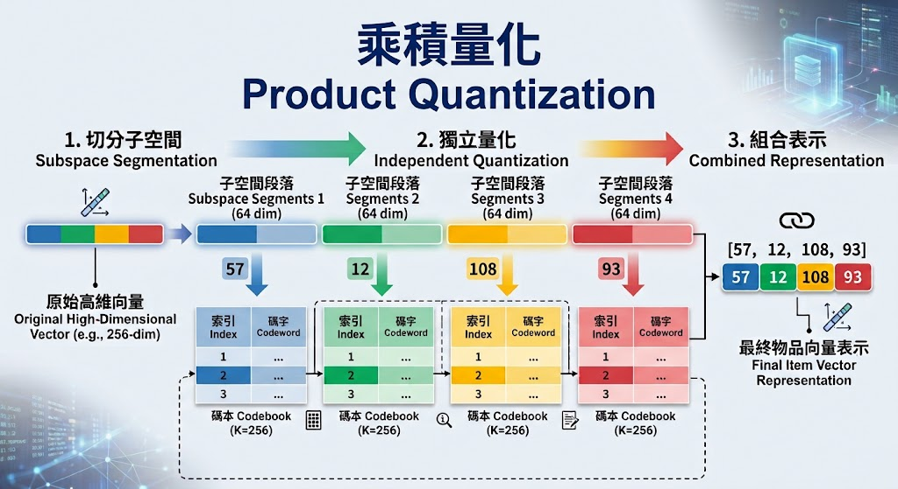

從幾何量化到生成式推薦：RQ-Kmeans 如何打造 Semantic ID Tokenizer
在生成式推薦的基石：Semantic ID 如何破解海量商品 Token 化難題一文中，我們探討了 Semantic ID (SID) 的核心概念——我們需要將海量商品轉換為大模型能理解的長度為 $M$ 的「階層式語意 Token 序列」，從而避開單步預測導致的詞表爆炸難題。

然而，商品在傳統推薦系統中，通常是以連續、高維度的浮點數向量（Embeddings）形式存在，而自迴歸大模型則擅長處理離散的 Token 序列。這帶來一個關鍵問題：我們該如何將連續的高維向量空間，精準且高效地轉換為離散且具備由粗到細語意階層的 SID 序列？
因此，本文將與讀者一同走過這段從傳統量化到生成式推薦的演進之路，從 K-means 到乘積量化 (PQ)，最終深入探討目前業界主流、CP 值最高且最穩健的終極方案——RQ-Kmeans (Residual Quantization K-means)。它能精準地把高維商品向量壓縮成 3~4 個具備由粗到細語意階層的 SID (Semantic ID) Token，完美扮演了生成式推薦中「翻譯官」的角色。
核心思維：從連續空間到離散 Token 的幾何橋樑
要達成將高維商品向量轉換為階層式語意 Token 序列的目標，本質上需要解決兩個循序漸進的難題：
- 如何將連續向量映射到離散的「碼本（Codebook）」中？（連續空間 $\to$ 離散字典的映射問題）
- 如何讓這些碼本的 ID 構成「由粗到細（Coarse-to-fine）」的階層式結構？（單一特徵 $\to$ 階層序列的結構問題）
我們的首要目標，就是先解決第一個難題：建立一個有語意的離散碼本。
離散化的直覺陷阱：生硬的網格分桶
要將連續空間離散化，最直覺的想法是「空間分桶（Bucketing / Grid）」，就像切豆腐一樣將多維空間劃分成等分的網格，並將落入同一個網格的資料賦予同一個離散 ID。
在向量量化（Vector Quantization）的術語中，這個離散 ID 以及它所代表的網格中心向量，被稱為碼字（Codeword）；而所有碼字集結而成的查找集合，就是碼本（Codebook）。換言之，離散化的本質，就是為每筆資料在碼本中找到一個最合適的碼字作為其身份標籤。
然而，當來到高維度空間時，這種做法會立刻撞上「維度詛咒（Curse of Dimensionality）」。真實世界的高維資料分佈往往極度不均，生硬的網格化不僅會產生海量的「空桶」，白白浪費儲存與運算資源；更致命的是，它完全無法捕捉資料真實的語意邊界——死板的網格線常常會把語意相近的資料硬生生切開，無法保證能將它們分在同一個桶子裡。
除此之外，網格化還面臨另一個根本性的痛點：它無法建構出真正帶有語意的「碼本」與「碼字」。網格只是一個人為劃定的死板幾何方塊，其幾何中心通常無法反映內部資料的真實樣貌，這讓賦予該區域語意這件事變得毫無根據。
這不禁讓我們思考：與其用一把死板的尺去切割空間，有沒有方法能順應相似語意資料本身的分佈，做出更聰明、有效的劃分？又或者說，我們能不能先用某種演算法，找出一群群具有相似語意的族群，並用各族群真實的中心點（Centroids）來作為「碼字」，進而建構出我們的「碼本」呢？
聚類即量化（Clustering as Quantization）
這個問題的答案，其實就藏在我們熟悉的聚類演算法中。在Discovering Hidden Structures: What Clustering Really Does一文中，我們曾提及聚類的本質就是尋找資料的自然群集，並用該群落的核心特徵來代表整個群體。這恰好完美契合了離散化的目標。

與其盲目地預先切分整個連續空間，不如透過 K-Means 聚類 找出資料真實分佈的中心點。這 $K$ 個中心點的集合，就是我們的「碼本」，而每一個中心點就是一個「碼字」。

對於任何一個新的物品向量，我們只要找到碼本中距離最近的聚類中心，並用該中心的索引 ID（從 $0$ 到 $K-1$）來代表這個物品向量即可。當我們把這個索引 ID 餵給大模型時，它就搖身一變成了大模型眼中的 Token。這正是「向量量化」的底層哲學——不切割空間，而是讓資料自己決定聚落，並用聚落的中心點來建構碼本。
演進之路：從基礎量化到 RQ-Kmeans 的階層破局
在成功透過碼本將連續向量離散化後，我們迎來了第二個難題：如何讓這些離散 ID 構成「由粗到細（Coarse-to-fine）」的階層式 Token 序列？
迷思破解：為何不直接用單一 K-means 當作詞表就好？
這個想法很直覺：既然幾億個商品太多，那就把它們聚類成 8192 個群，詞彙表不就縮小了嗎？但如果我們只依賴這種單一碼本的範式，會立刻陷入兩難的困境：
- 若 $K$ 值太小（例如 8192）： 雖然解決了詞表過大的問題，但量化誤差（Distortion）會非常驚人。這意味著可能會有成千上萬個截然不同的商品被強行映射到同一個 Codebook ID 上，模型根本無法區分這些商品的細微差異，推薦將變得極度粗糙。
- 若 $K$ 值極大（例如 100 萬）： 為了精確代表物品的細節，我們賦予每個商品獨特的聚類中心。但這時碼本的儲存空間與大模型的訓練算力又會直接爆炸，本質上又退回了傳統 ID 詞表爆炸的老路。
這就是為什麼單一 K-means 無法直接作為 Semantic ID 的原因。我們必須突破單一碼本的限制，往多碼本組合的方向發展。
乘積量化 Product Quantization (PQ)——分而治之

為了突破單一 Token 的限制，轉而以「多個 Token 組合」來表達商品，乘積量化（Product Quantization, PQ）提出了一個「分而治之」的巧妙思路：
- 切分子空間： 將高維向量（如 256 維）切分成 $M$ 段獨立的子空間（如 4 段，每段 64 維）。
- 獨立量化： 為每一段子空間獨立訓練一個小的 K-means 碼本（如 $K=256$）。
- 組合表示： 最終，一個物品向量就能被表示為多個子空間碼本索引的組合，例如
[id_seg1, id_seg2, id_seg3, id_seg4]。
透過這種方式，我們僅需極小的儲存空間（$4 \times 256$ 個向量），就能表達高達 $256^4 \approx 43$ 億種商品組合，大幅提升了模型的表達容量。
然而，Product Quantization 存在一個致命缺陷：子空間的切分是獨立且平行的，這不僅硬生生破壞了向量整體的全局幾何特徵；更關鍵的是，各子空間地位完全對等，無法提供生成式模型所必需的「由粗到細（Coarse-to-fine）」階層語意結構。
殘差量化 Residual Quantization (RQ-Kmeans)——逐層細化
為了克服 Product Quantization 缺乏階層語意的缺點，殘差量化（RQ-Kmeans） 成為了技術演進的關鍵突破。
與 Product Quantization 粗暴切分空間不同，Residual Quantization 選擇保留完整的全局向量，改採「逐層細化、遞減殘差、逐步求精」的策略：
- 第 1 個 Token： 在原始特徵空間中快速鎖定宏觀大方向（如商品大類）。
- 第 2 到第 $M$ 個 Token： 逐層對上一層遺留的「殘差（Residual）」進行量化，不斷修正局部的幾何細節。
這種機制讓商品向量天然長成一棵「由粗到細」的語意樹，完美契合了生成式推薦對 Semantic ID 的階層化需求。
RQ-Kmeans 演算法運作機制、解碼策略與幾何重構

假設我們使用 $M$ 層碼本來量化一個連續向量 $v$，具體的運作機制可拆解為三個核心階段：
第一步：粗粒度量化 (Coarse Quantization)
在全量商品向量上訓練第一層 K-means 碼本 $\mathcal{C}^{(1)}$。針對目標向量 $v$，尋找距離最近的碼字（中心點）$c_1$，第 1 個 Token 即為 $c_1$ 的索引 $\text{idx}_1$。
接著計算殘差，這代表第一次粗量化後尚未捕捉到的幾何細節： $$r_1 = v - c_1$$
第二步：多層殘差量化 (Refinement Stage)
收集所有第一層的殘差 $\{r_1\}$，以此為訓練集擬合第二層碼本 $\mathcal{C}^{(2)}$。針對殘差 $r_1$ 尋找距離最近的碼字 $c_2$，第 2 個 Token 即為 $\text{idx}_2$。
接著繼續更新殘差，計算第二層量化後依然遺留的誤差： $$r_2 = r_1 - c_2 = (v - c_1) - c_2$$
重複此過程 $M$ 次，在第 $m$ 層針對上一層留下的殘差 $r_{m-1}$ 持續尋找最佳碼字 $c_m$ 並記錄索引 $\text{idx}_m$。最終，原始向量 $v$ 就被轉換為一組長度為 $M$ 的離散索引序列： $$\text{SID}(v) = [\text{idx}_1, \text{idx}_2, \dots, \text{idx}_M]$$
第三步：向量近似重構 (Geometric Reconstruction)
有了這組 Token 序列，在幾何空間中該如何還原該商品？我們只需從各層碼本取出對應的中心點向量並直接求和，即可得到原始向量的近似重構向量 $v_{\text{approx}}$： $$v_{\text{approx}} = \sum_{m=1}^M c_m = c_1 + c_2 + \dots + c_M$$
從幾何視角來看，$c_1$ 先在大尺度空間定位宏觀類別（如「電子產品 $\to$ 手機」），後續的 $c_2, \dots, c_M$ 則在殘差空間中扮演微調向量，沿著殘差方向不斷修正細部幾何位置（如「品牌 $\to$ 尺寸 $\to$ 顏色」）。
解碼策略：貪婪解碼 vs. 束搜尋 (Beam Search)
在將原始連續向量轉換為離散 Token 序列的過程中（也就是決定上述每層最近中心點的「量化解碼」階段），我們究竟該如何選擇每一層的中心點？實務上有兩種截然不同的策略：
- 貪婪解碼 (Greedy Encoding)： 每層獨立選擇距離最近的中心。缺點是前幾層的選擇會直接決定下一層殘差的空間走向，貪婪選擇往往會落入「一步錯，步步錯」的局部陷阱。
- 束搜尋 (Beam Search)： 在量化解碼時維護 Top-$B$ 個候選 Token 序列路徑。這種方式考量了全局最佳解，能顯著降低整體的幾何重構失真 $\sum \|v - v_{\text{approx}}\|^2$。
RQ-Kmeans 核心優勢與潛在探索性
了解了 RQ-Kmeans 巧妙的殘差量化機制後，我們可以發現它不僅僅是單純的幾何壓縮工具，更是為生成式推薦量身打造的橋樑。具體而言，它具備五大核心優勢：
-
指數級的表達容量（以小博大）：
僅需維護 $M \times K$ 個中心點向量的儲存空間，就能組合表達出 $K^M$ 種狀態。在顯著降低碼本與詞表大小的同時，依然保有極高的幾何重構精度。
-
天然由粗到細的階層語意（Coarse-to-fine）：
第 1 層 Token 鎖定宏觀大類，後續 Token 逐步微調幾何細節。這種天然的樹狀層級關係，極大程度降低了大模型學習商品相似度與語意關聯的難度。
-
無縫對齊自迴歸架構：
將連續空間的檢索難題轉化為離散序列生成任務，讓 Transformer 等強大的 LLM 骨幹網路能直接沿用 Next-Token Prediction 範式進行推薦。
-
潛在興趣探索與新穎性（Novel Item Exploration）：
模型自迴歸生成出的 Token 序列，即使在資料庫中找不到完全對應的現有商品，其求和重構出的向量 $v_{\text{pred}}$ 依然落在合理的幾何空間中，代表著使用者的「潛在興趣點」。這為系統兼顧探索性（Exploration）與多樣性（Diversity）開啟了全新的工程空間。
-
高度可調的工程彈性（Flexibility of $M$）：
碼本層數 $M$ 賦予了系統在「推論延遲」與「表徵精度」之間靈活權衡（Trade-off）的能力——調小 $M$ 可加速自迴歸解碼，調大 $M$ 則能更精準地還原商品特徵。
然而，RQ-Kmeans 雖然擁有上述諸多優勢與優美的數學幾何直覺，但在真實的工程落地場景中，它並非完美無缺。當面對極端高維且稀疏的真實數據時，純粹的幾何量化會遭遇一些棘手的退化問題與技術挑戰。
進階技術視角：死碼危機與碼本坍塌 (Dead Codes)
在理想狀況下，我們會希望碼本中每個 Codeword 的利用率（Codebook Utilization Rate, CUR）達到最大化。畢竟，碼本容量是我們預先設定好的寶貴資源（如 $K=8192$），如果只有少數幾個中心點被頻繁使用，其餘中心點全部閒置，就等於白白浪費了模型的表達能力。
如同在K-Means: Clustering Around Centers中所探討的，在大規模高維數據上運行 K-means 常常會出現空群集（Empty Clusters），或是某些聚類中心幾乎沒有數據點落入。這會導致碼本有效容量被嚴重稀釋，發生碼本坍塌，在量化領域中被稱為「死碼（Dead Codes）」現象。
為了解決這個問題，業界常透過正則化殘差量化（Regularized Residual Quantization, RRQ），引入資訊理論中的率失真理論（Rate-Distortion Theory）與反向水閥（Reverse Water-Filling）原則：
- 動態維度選擇（Active Dimension Selection）： 在深層殘差空間中，數據在某些維度的變異數已大幅衰減。RRQ 僅對變異數高於臨界值的維度進行量化，避免模型在低變異數的雜訊維度上過度擬合。
- 變異數懲罰項： 在 K-means 的平方誤差優化目標中加入變異數匹配懲罰，強迫各層碼本的使用分佈更加均勻，極大化資訊熵，讓碼本利用率逼近 100%。
架構選型與權衡：RQ-Kmeans 與 RQ-VAE 的技術路徑之爭
在生成式推薦領域，除了幾何導向的 RQ-Kmeans，另一個備受關注的量化方案是 RQ-VAE (端到端神經量化)。兩者雖然都能產出階層式 Token 序列，但在架構設計理念與工程取捨上截然不同：
| 特性維度 | RQ-Kmeans (幾何量化) | RQ-VAE (深度生成模型) |
|---|---|---|
| 核心驅動 | 演算法驅動： 基於 K-means 幾何空間劃分。 | 模型驅動： 基於 VAE 機率分佈擬合與神經網路。 |
| 訓練機制 | 解耦 / 兩階段式： 由預訓練模型產出向量後，獨立訓練量化器。 | 端到端 (E2E)： 編碼器、離散碼本與解碼器聯合進行梯度更新。 |
| 運算成本與穩定性 | 極低、極穩定： 無梯度傳播，純 EM 演算法驅動，收斂具備數學保證。 | 高成本、調參敏感： 依賴不可微的 STE 傳遞梯度，訓練容易不穩定。 |
| 適用場景 | 系統已有高品質 Embedding，追求高效率與穩健落地。 | 算力充足，追求端到端 SOTA 效能，希望碼本能根據推薦目標共同演化。 |
儘管 RQ-VAE 透過 AutoEncoder 架構實現特徵學習與量化碼本的聯合優化，理論上限更高；但在工業落地時，它高度依賴不可微的 Straight-Through Estimator (STE) 來近似梯度，容易面臨碼本坍塌與訓練發散的風險，調參與算力成本顯著偏高。
相較之下，RQ-Kmeans 展現了極高的工程實用性：除了純幾何優化帶來的極致穩定外，它具備極佳的資產複用性 (Plug-and-Play)，能夠直接無縫接入現有 DSSM、雙塔或 Graph 模型產出的高品質 Item Embedding，無需重構上游特徵管線。
💡 實務混用策略 (Hybrid Strategy)： 在實際落地中，兩者並非二選一的對立關係。業界常見的 Best Practice 是採用「熱啟動（Warm-up）」策略：先利用 RQ-Kmeans 在離線快速聚類出穩健的初始碼本，作為 RQ-VAE 的初始化權重（Initialization），隨後再進行端到端的微調。如此既能避開從零隨機初始化導致的訓練動盪，又能保留神經網路微調的上限空間。
在理解了 RQ-Kmeans 的幾何原理與進階優化後，我們來看看在工業界中，工程團隊如何將它無縫接入生成式推薦的端到端管線中。
落地實踐：生成式推薦的三階段工作流
在推薦系統邁向生成式架構的過程中，RQ-Kmeans 扮演了連接「連續特徵工程」與「離散自迴歸建模」的橋樑。整個落地流程可劃分為三個核心階段：
階段一：離線訓練量化器 (Offline Quantizer Training)
- 獲取物品向量： 複用既有特徵工程資產，由預訓練模型（如 DSSM、雙塔、GraphSAGE 或多模態模型）為全站物品產出高品質的連續嵌入向量 $v$。
- 訓練 RQ-Kmeans： 將全量物品向量作為輸入進行幾何分群，逐層最小化殘差，產出 $M$ 層穩健的中心點碼本 $\mathcal{C}^{(1)}, \mathcal{C}^{(2)}, \dots, \mathcal{C}^{(M)}$。
階段二：離線商品 Token 化與總詞表建構 (Offline Tokenization)
量化器訓練完成後，便可作為離線 Tokenizer 使用（此階段為純推論編碼，不更新碼本）：
-
編碼全站物品： 遍歷商品庫，將每個物品的連續向量輸入 RQ-Kmeans（可搭配 Beam Search 降低重構失真），轉換為長度為 $M$ 的 SID 序列。例如：
$$\text{Item}_A \longrightarrow [12, 255, 7, 98]$$
-
建構總詞彙表： 若每層碼本大小為 $K$（如 $K=8192$），則整套系統的總詞表容量僅需 $M \times K$，即可精準表徵全站數億級別的商品集合。
階段三：自迴歸推薦模型訓練 (Generative Model Training)
-
序列轉換與展平： 根據物品與 SID 的映射關係，將用戶的歷史行為序列逐一轉為 Token 並展平：
- 原始行為序列：$[\text{Item}_A, \text{Item}_B]$
- 轉為 SID 序列：$[[12, 255, 7, 98], [56, 101, 23, 42]]$
- 展平輸入模型：$[12, 255, 7, 98, 56, 101, 23, 42, \dots]$
-
Next-Token Prediction 訓練： 將展平後的 Token 序列送入 Transformer 骨幹網路（如 SASRec 或自迴歸大模型），以標準的交叉熵損失進行自迴歸訓練，讓模型學會根據過去的行為軌跡，逐層預測下一個目標商品的階層式 Token。
總結
要讓推薦系統真正走向生成式架構，最難的一步，往往是如何將連續的高維向量，轉換成自迴歸模型能理解的離散 Token。
回顧從 K-means、PQ 到 RQ-Kmeans 的技術演進，其實就是一個不斷在「壓縮效率」與「語意保留」間尋找平衡的過程。RQ-Kmeans 透過遞減殘差的機制，不只解決了海量商品的詞表爆炸問題，還順勢建構出具備 Coarse-to-fine 階層關係的 Semantic ID。
比起追求極致的端到端神經網路，RQ-Kmeans 勝在務實。它足夠穩定、能直接複用系統現有的 Embedding 資產，其重構向量的特性也為系統的探索性留下了空間。在生成式推薦的落地實踐中，這套基於幾何量化的方案，確實是目前串聯連續特徵與離散 LLM 語意最可靠的選擇之一。
Review Kit
QA Generator Prompt
You are given a set of notes or an article.
Read and understand the content, then generate approximately 20 questions.
Requested question type(s): ["mcq"]
Most questions should be drawn directly from the material, focusing on key concepts, definitions,
and core ideas, while a smaller portion can be creative or application-based,
extending the material into real-world or novel scenarios but staying conceptually grounded.
Include a mix of difficulty levels—beginner, intermediate, advanced, and professional.
For each question, provide the question number, type (conceptual, application, analytical),
difficulty, topic, the correct answer, and a brief explanation.
If the requested question format requires options (for example MCQ), include the necessary answer choices.
Focus on clarity, relevance, and meaningful application, avoiding trivial or overly obscure details.You are given a set of notes or an article.
Read and understand the content, then generate approximately 20 questions.
Requested question type(s): ["mcq"]
Most questions should be drawn directly from the material, focusing on key concepts, definitions,
and core ideas, while a smaller portion can be creative or application-based,
extending the material into real-world or novel scenarios but staying conceptually grounded.
Include a mix of difficulty levels—beginner, intermediate, advanced, and professional.
For each question, provide the question number, type (conceptual, application, analytical),
difficulty, topic, the correct answer, and a brief explanation.
If the requested question format requires options (for example MCQ), include the necessary answer choices.
Focus on clarity, relevance, and meaningful application, avoiding trivial or overly obscure details.